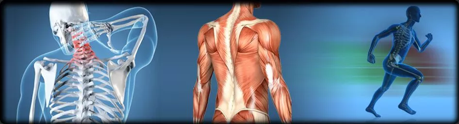

Medictou
Medical Tourism in India
Your Gateway to Quality Healthcare
Your Gateway to Quality Healthcare
It is a branch of the medical system that deals with the care of the musculoskeletal system. This system is made up of muscles and bones, ligaments, joints, and tendons. The person who specializes in orthopedics is called an orthopedist. They use both surgical and nonsurgical approaches to treat a wide range of musculoskeletal issues, such as sports injuries, back problems, joint pain, etc.
Orthopedists treat a wide range of musculoskeletal conditions which are present by birth or may have occurred during injury or age-related wear and tear. Here are some of the most common conditions of orthopedics:
Orthopedic doctors may recommend various diagnostic tests to evaluate musculoskeletal conditions. Some of these tests include:
Normal human beings have more than 300 bones along with joints in our body. If one of them starts dysfunctioning then it can lead to a great problem.
Potassium, vitamin K, and magnesium help in keeping your body absorb and use calcium. Intake these important nutrients by eating a variety of healthy foods such as vegetables and fruit, legumes (beans, peas, lentils), nuts, seeds, whole grains, and fish. Protein helps to build muscle that helps keep bones strong and healthy. Choose protein-rich foods such as fish, shellfish, meat, poultry, legumes, nuts, and seeds.
Be active for a minimum of 150 minutes each week. Do exercises like weight-bearing exercises like running, walking, dancing, tennis, hiking, low-impact aerobics, and golf. Stretching exercises such as yoga will help to improve balance and coordination, which will lower your risk of falling and breaking bones.
Consuming too much caffeine may decrease the amount of calcium you absorb.
Excess drinking alcohol can contribute to bone loss.
If you smoke, you will face faster bone loss and a higher risk of bone fractures.